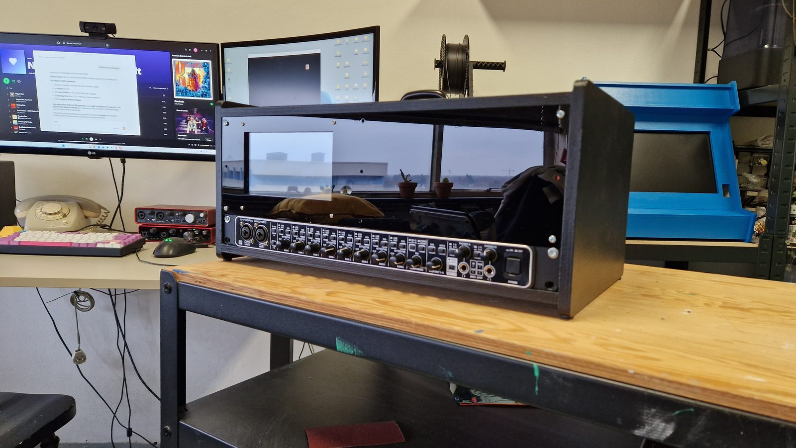

Aura Bouw: geluid naar lasers
Iedere trilling zichtbaar als vorm en beweging. Muziek die je niet alleen hoort, maar ook ziet.
Afgelopen weekend stond Studio Wotto samen met componist Aura Bouw op Hit the City. Aura maakte niet alleen de muziek, maar vormde met haar composities ook de lasers. Studio Wotto zorgde voor de live visuals, de vertaling van geluid naar lasers, zodat iedere trilling zichtbaar werd als vorm en beweging.
We lieten ons inspireren door bewegingen uit de natuur, van golvend water tot elektronische patronen op een oude oscilloscoop. Je weet wel, zo'n radarscherm met groene golvende lijntjes. Vroeger door Philips gebruikt in het Klokgebouw, en nu weer te zien in POPEI.
Een ervaring neerzetten waarbij je naar gecomponeerde muziek kunt luisteren zonder dat je de muzikanten mist, dat was de uitdaging. De beelden zijn ondergeschikt aan de muziek en brengen je in een sfeer waarin juist meer ruimte is om écht te luisteren.
Het was een supergeslaagde try-out. We gaan nog wat finetunen en daarna is het binnenkort op meer plekken te zien.

Grote dank aan Effenaar / Hybrid Music Vibes voor het mogelijk maken van deze ervaring. Video via Effenaar.
Projectinformatie
- Opdrachtgever
- Hybrid Music Vibes, via Effenaar
- Categorie
- Podium & instrumenten
- Projecttype
- Audiovisuele liveperformance, geluid vertaald naar lasers
- Studio Wotto verzorgde
- Concept, techniek, software en de vertaling van geluid naar lasers
- Muziek en compositie
- Aura Bouw
- Gepresenteerd bij
- Hit the City en Dutch Design Week
- Toepassing
- Festivals, concerten en podia
- Gerelateerde diensten
- Live visuals, geluidsontwerp, muziektechnologie